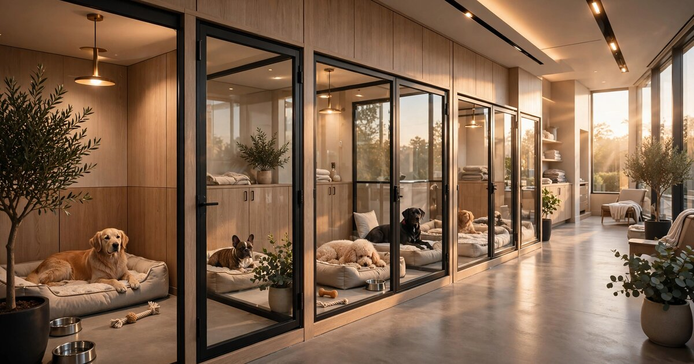

Your Dog Kennel Prices Like a 1975 Holiday Inn. Here's the $90,000 It Costs You.
The U.S. pet boarding industry generates $6.8 billion a year across 18,000+ facilities. Not a single one uses dynamic pricing. Hotels solved this problem four decades ago. Self-storage solved it a decade ago. Pet boarding has not solved it at all.

The Problem
The pricing sophistication of a $400,000-per-year independent pet boarding business in 2026 is indistinguishable from the pricing sophistication of a Holiday Inn in 1975. One rate card, updated once a year with a cost-of-living bump, applied uniformly from January through December regardless of whether every kennel in the building is full on the Fourth of July or half-empty on a Tuesday in February. No time-of-day pricing, no day-of-week adjustment, no seasonal yield curve, no early-booking premium, no last-minute discount. The entire $6.8 billion U.S. pet boarding industry runs on gut feel.
The numbers behind that gut feel are large and growing. The American Pet Products Association reports that Americans spent $158 billion on their pets in 2025, a 3.7% increase from $152 billion in 2024. Spending on "other services" (boarding, grooming, insurance, training, pet sitting, dog walking) hit $14.3 billion in 2025, projected to grow 4.2% to $14.9 billion in 2026. IBISWorld counts 18,374 pet boarding businesses in the United States as of 2025.
The market is extraordinarily fragmented. A Lexology industry overview from October 2025 noted that the sector "remains highly fragmented with no single operator capturing more than 5% of the market." The major franchise chains (Camp Bow Wow, Dogtopia, PetsHotel) collectively represent fewer than 700 branded locations. The other 17,000-plus facilities are independently owned, typically single-location operations run by one to five employees. Prices vary wildly by geography: $25 per night for a medium-sized dog in rural Mississippi, $85 in Manhattan, national average around $40-55.
The hotel industry quantified and solved this problem starting with the introduction of RevPAR (Revenue Per Available Room) as the core performance metric. RevPAR, calculated as total room revenue divided by total available room-nights, became the industry standard that allowed hotels to compare performance across properties, brands, and markets. STR (now part of CoStar Group) built a multi-billion-dollar business aggregating RevPAR data from 80,000+ hotels globally, and IDeaS Revenue Solutions (a SAS company) built another by turning that data into automated pricing recommendations. The result: the average hotel today adjusts its room rate 30-50 times per week based on demand signals, competitor pricing, and booking velocity. The pet boarding industry uses the equivalent metric zero times per year.
Market Size
Core TAM calculation: IBISWorld counts 18,374 pet boarding businesses in the U.S. generating $6.8 billion in combined revenue. The addressable market for a RevPAK intelligence and dynamic pricing platform is facilities with 15 or more kennel units, sufficient volume to benefit from pricing optimization and to generate statistically meaningful occupancy data. Based on industry surveys and franchise disclosure documents (Camp Bow Wow's FDD lists a median of 72 dog runs per facility; most independents operate 20-50 units), approximately 10,000-12,000 facilities meet this threshold. At a blended ARPU of $349/month (a $249/month Standard tier for RevPAK analytics and cross-facility benchmarking, and a $499/month Premium tier with automated dynamic pricing, at a projected 55/45 split), the core SaaS TAM is $42-50 million in annual recurring revenue.
The larger opportunity is the add-on revenue layer. Pet boarding facilities generate 25-40% of their gross revenue from services beyond the base overnight stay: grooming ($40-80 per session), daycare ($25-45 per day), individual play sessions ($10-20 each), medication administration ($5-15 per dose), premium suites ($15-30 upcharge), pickup and delivery ($15-25 each way), and training sessions ($50-100 per hour). Most facilities offer these add-ons at flat prices and make no effort to optimize attachment rates or bundle pricing. A platform that tracks which add-on combinations maximize per-guest revenue, recommends optimal bundle pricing, and A/B tests promotional offers could increase per-booking revenue by 8-15%. On $6.8 billion in industry revenue, even a 1% add-on revenue lift from platform users would represent $68 million in incremental operator revenue, of which a 10-15% take rate would add $6.8-10.2 million in platform revenue. Combined with the SaaS layer: $49-60 million TAM in year 3.
The Product
A revenue intelligence and dynamic pricing platform purpose-built for pet boarding, daycare, and grooming facilities, combining real-time occupancy data from participating operators with demand signals, competitive pricing intelligence, and automated rate recommendations. Four core modules:
- RevPAK benchmarking engine: Revenue Per Available Kennel is the boarding industry's missing metric. For a facility with 40 kennel units operating 365 days per year, total available kennel-nights equal 14,600. If the facility generates $310,000 in boarding revenue, its RevPAK is $21.23 per available kennel-night. Is that good? Nobody knows, because nobody measures it. This module ingests anonymized revenue and occupancy data from participating facilities and produces market-tier benchmarks segmented by geography (metro area, zip code cluster), facility size (15-30 units, 31-60, 61-100, 100+), service level (basic kennel, mid-range suites, luxury/boutique), and breed-size mix. The output: your 40-unit suburban facility in the Denver metro is performing at the 38th percentile for its class. Comparable facilities average RevPAK of $27.40; you are at $21.23. The gap represents approximately $90,000 in unrealized annual revenue.
- Dynamic pricing engine: Automated rate recommendations that adjust nightly boarding prices based on real-time occupancy, booking velocity (how fast remaining capacity is filling), day of week, seasonal demand curves, local event calendars, competitor pricing changes, and historical demand patterns. The engine operates within operator-defined guardrails: a minimum rate floor, a maximum rate ceiling, and maximum day-over-day rate change percentage. The operator reviews and approves recommended rate changes via a mobile dashboard, or enables fully automated pricing where the system adjusts rates in connected booking platforms (PetExec, Gingr, ProPet, direct website widgets) without manual intervention. A 60-unit facility at 55% average occupancy that moves to demand-responsive pricing should see occupancy stabilize around 68-72% at a higher average daily rate, increasing total revenue 15-25%.
- Add-on revenue optimizer: Most boarding facilities list their add-on services (grooming, daycare, play sessions, walks) as flat-rate menu items and rely on the front desk to verbally offer them at check-in. This module analyzes which add-on combinations are most frequently purchased together, which have the highest profit margins, which are most correlated with repeat booking, and which are most price-elastic. It generates recommended bundle packages ("The Weekend Getaway: 2-night stay + bath + 2 play sessions, $X" vs. "$X+15 if purchased individually") and pushes them into the booking confirmation flow. Facilities using structured add-on recommendations in other service industries (auto repair, dental offices, salons) typically see 15-25% higher average transaction values.
- Competitive intelligence monitor: Automated tracking of publicly listed boarding rates from competitors within a configurable radius (default: 15 miles). Data sources: competitor websites (most independent boarding facilities publish rate cards on their sites), Google Business Profile listings, Rover.com listings, and Wag! marketplace rates. Cross-referenced with the operator's own pricing to show competitive positioning by service tier and breed size. If the two closest competitors both raised holiday-week rates by 20% and the operator's facility has not adjusted, the system flags the pricing gap and recommends a rate increase with a confidence interval based on historical booking behavior.
Unit Economics
| Metric | Value |
|---|---|
| Monthly subscription (Standard: RevPAK benchmarking + competitive intelligence) | $249/facility |
| Monthly subscription (Premium: full dynamic pricing + add-on optimizer) | $499/facility |
| Blended ARPU (55/45 Standard/Premium split) | $349/month |
| Revenue share on incremental add-on revenue (optional) | 10-15% |
| Data infrastructure cost per subscriber/month | $28 |
| Booking platform integration maintenance per subscriber/month | $18 |
| Customer acquisition cost | $3,800 |
| Expected LTV (24-month avg retention, 87% gross margin) | $7,285 |
| LTV:CAC ratio | 1.9:1 (Year 1); 3.8:1 (Year 3 at 36-month retention) |
| Gross margin (SaaS layer) | 87% |
| Startup cost (18-month runway) | $4.2M |
| Break-even | 24 months |
Methodology note: The 24-month average retention assumption is conservative relative to comparable vertical SaaS products but reflects the reality that pet boarding facility owners are less tech-savvy than hotel revenue managers and will have higher early churn as some realize they prefer the simplicity of flat-rate pricing. The 36-month retention figure (used for Year 3 LTV) assumes product-market fit improvements and the benchmarking data network effect: once an operator has 18 months of RevPAK trend data showing their performance relative to peers, switching costs become meaningful. CAC of $3,800 reflects a blended acquisition cost across trade show presence (Global Pet Expo, SuperZoo), targeted digital advertising on industry platforms (Pet Boarding & Daycare magazine, Pet Care Pro community), direct outreach through kennel management software integration partnerships, and a 60-day free trial conversion funnel. The free trial is critical: operators need to see their own RevPAK score relative to anonymized peers before they will pay for the product.
Who Builds What (And What Nobody Builds)
| Company | What It Does | Revenue Intelligence? | Pricing |
|---|---|---|---|
| Gingr | All-in-one kennel management: scheduling, CRM, POS, mobile app (DataIntelo est. 18-22% share) | No: operational reporting only, no cross-facility benchmarking or dynamic pricing | $99-349/mo |
| PetExec | Enterprise kennel management with reporting analytics (DataIntelo est. 12-16% share) | Partial: internal business intelligence dashboards, no external benchmarking or rate optimization | $119-399/mo |
| PawLoyalty | Loyalty programs, marketing automation, revenue growth tools (DataIntelo est. 8-11% share) | Partial: loyalty-driven revenue tracking, no occupancy yield management | $79-299/mo |
| ProPet Software | Kennel, grooming, daycare management with online booking | No: scheduling and CRM, not pricing analytics | $75-250/mo |
| Revelation Pets | Cloud-based booking and customer management for pet care businesses | No: booking workflow, not revenue optimization | $49-199/mo |
| Rover / Wag! | Consumer marketplace connecting pet owners with sitters and boarders | No: demand aggregation for individual sitters, not facility-level yield management | 15-25% take rate |
| This startup | RevPAK benchmarking + dynamic pricing + add-on optimization | Core product: anonymized cross-facility revenue analytics with automated yield management | $249-499/mo |
The competitive gap mirrors what existed in the hotel industry before STR and IDeaS. Gingr is the property management system: it manages reservations, tracks animal records, and processes payments, but it does not tell the operator whether $55/night is the right price for a standard kennel on a Thursday in March. PetExec has the best internal analytics among the existing players, with dashboards showing revenue by service type and utilization trends, but it compares a facility only against its own historical data, not against the market. PawLoyalty is the closest to revenue growth intelligence, but its approach is loyalty-driven (increase repeat visits) rather than yield-driven (maximize revenue per available unit). Nobody in the pet boarding software ecosystem is answering the fundamental question that hotels answer 50 times per week: "Given current demand, competitor pricing, and my remaining capacity, what should tonight's rate be?"
Why Now
Three structural shifts have converged in 2024-2026, and none of them is "AI makes everything better."
First, the pet ownership expansion has permanently reset demand. The 2025 AVMA Pet Ownership and Demographics Sourcebook reports 87.3 million dogs in the United States across 56.3 million households, up from 52.9 million dogs in 1996. The APPA's 2026 State of the Industry Report found that 95 million U.S. households now own at least one pet, representing nearly three-quarters of American homes, up from 91 million in 2024. This is not a COVID blip that will revert. 77% of pet owners report that financial pressures have not affected whether they keep their pets. The demand base for boarding is structurally larger than it has ever been, and the physical supply of boarding facilities has not kept pace: IBISWorld notes the number of businesses has declined 0.5% annually from 2020 to 2025, meaning the same (or fewer) facilities are serving more animals. This is exactly the supply-demand imbalance where dynamic pricing generates the most value.
Second, the booking technology transition has finally produced the data infrastructure that revenue management requires. Through 2020, most independent boarding facilities accepted reservations by phone or walk-in. There was literally no electronic record of booking patterns, cancellation rates, or lead times. The COVID-era forced adoption of online booking, and kennel management platforms (Gingr, PetExec, ProPet) grew from niche tools to mainstream adoption. DataIntelo's 2025 market analysis reports that Gingr alone commands 18-22% of the kennel software market, with "new features every 6-8 weeks." The kennel management software market overall reached $4.09 billion in 2025, growing at 8.5% CAGR. For the first time, a critical mass of boarding facilities are generating structured, time-stamped, unit-level booking data. The raw material for a revenue management platform now exists in digital form across thousands of facilities. It did not exist five years ago.
Third, private equity has discovered pet services, and the acquirers need data. The Lexology report from October 2025 explicitly described "robust M&A activity" and "substantial consolidation opportunities for strategic acquirers and private equity platforms." When PE rolls up independent boarding facilities, the first question the operations team asks is: "Are we pricing these facilities correctly relative to the market?" Without RevPAK benchmarking data, the answer is unknowable. A RevPAK intelligence platform becomes not just a pricing tool for independent operators, but a due diligence and portfolio optimization tool for the acquirers consolidating the industry. The same dynamic played out in self-storage (Yardi Matrix provides the benchmarking data that REITs use to evaluate acquisitions) and in hotels (STR data is foundational to every hotel transaction analysis). Pet boarding is following the same consolidation arc, roughly 15-20 years behind.
Original Contribution: The RevPAK Gap
A calculation nobody in the pet boarding industry has published: We can estimate the revenue gap between optimally priced and flat-rate-priced boarding facilities using publicly available data and hotel-industry yield management benchmarks.
Start with a representative independent boarding facility: 40 kennel units, $50/night average rate, open 365 days per year. Total available kennel-nights: 14,600. Industry average occupancy for independent pet boarding facilities is approximately 55-60% based on franchise disclosure documents and industry surveys (Camp Bow Wow's FDD implies 60-65% utilization for mature facilities; independents without brand recognition typically run 5-10 points lower). At 57% average occupancy and $50/night flat rate, the facility generates: 14,600 × 0.57 × $50 = $416,100 in annual boarding revenue. Its RevPAK is $28.50.
Now apply what the hotel industry learned from 40 years of yield management. IDeaS Revenue Solutions reports that hotels implementing automated revenue management systems typically see a 5-8% increase in RevPAR within the first year, with mature implementations achieving 8-15% over static pricing. The mechanism is straightforward: raise prices during high-demand periods when the facility would sell out anyway (holidays, summer weekends, local events), and lower prices during low-demand periods to fill otherwise-empty units. The net effect is higher average rates during peaks and higher occupancy during troughs, both of which increase RevPAK.
Apply the conservative end of the hotel benchmark (7% RevPAK improvement) to the boarding facility. New RevPAK: $28.50 × 1.07 = $30.50. New annual boarding revenue: 14,600 × $30.50 = $445,300. That is $29,200 in incremental annual revenue for one facility, achieved through smarter pricing alone, with no additional kennel construction, no additional staff, and no incremental marketing cost. A 40-unit facility paying $499/month ($5,988/year) for a Premium-tier dynamic pricing subscription achieves a 4.9x return on that subscription cost in year one.
Scale that across the addressable market. If 3,000 facilities (25-30% of the 10,000-12,000 addressable facilities) adopted dynamic pricing and achieved the conservative 7% RevPAK improvement, the aggregate incremental revenue across those facilities would be approximately $87.6 million per year. That is $87.6 million in economic value created from pure pricing intelligence applied to existing capacity, with no brick laid and no kennel built.
The add-on revenue opportunity compounds the effect. If structured bundle recommendations increase per-booking add-on attachment by 12% (midpoint of the 8-15% range observed in comparable service industries), and the average add-on spend is $25 per booking, the incremental add-on revenue per facility is approximately $7,500 per year. Across 3,000 facilities: $22.5 million. Total incremental operator revenue from both pricing and add-on optimization: $110 million. A SaaS platform capturing $349-499/month from those operators, plus a 10% take rate on a portion of incremental add-on revenue, is a $15-20 million ARR business within three years.
Go-to-Market
Phase 1 (months 1-8): Recruit 150 boarding facilities across three metro clusters: Greater Denver, Dallas-Fort Worth, and Greater Boston, selected for their mix of cost tiers, independent facility density, and PE consolidation activity. Offer free Standard-tier access for 12 months in exchange for anonymized revenue and occupancy data via API integration with existing kennel management platforms. Target through Global Pet Expo and SuperZoo, plus direct partnerships with Gingr, PetExec, and ProPet, where the revenue intelligence layer enhances their product without competing with their core workflow.
Phase 2 (months 9-16): Monetize with the $249/month Standard tier. Beta test the dynamic pricing engine with 30-40 facilities using a "shadow mode" where the engine recommends prices the operator can accept, reject, or modify, logging decisions to train on operator risk tolerance. Expand to 8 additional metro markets.
Phase 3 (months 17-24): Full Premium tier at $499/month with automated dynamic pricing. Benchmarking data should cover 800-1,000 facilities across 13 markets. Approach PE-backed consolidators (NVA, Pathway Vet Alliance, VetCor) and franchise networks as enterprise clients at $1,500/month per portfolio. A PE firm acquiring 40 facilities at $1,500/month is $18,000 ARR from a single customer.
Limitations
The 7% RevPAK improvement benchmark is borrowed from the hotel industry, where yield management has been refined over four decades with massive datasets, PhD-level revenue science teams, and consumer populations accustomed to variable pricing. Pet boarding is a meaningfully different market in several respects that may reduce the achievable improvement.
First, pet boarding demand is less elastic than hotel demand. A traveler choosing between a $129/night hotel and a $159/night hotel across the street makes a price-sensitive decision. A pet owner choosing between a $50/night kennel and a $60/night kennel 10 miles away makes a trust-sensitive decision. Pet owners choose boarding facilities based primarily on perceived quality of animal care, proximity, personal relationship with staff, and word-of-mouth reputation. Price is a secondary consideration. This means that raising prices during peak periods may capture more revenue without losing bookings (good for the operator), but lowering prices during off-peak periods may not attract enough incremental demand to fill empty kennels (bad for the yield model). The demand curve for pet boarding may be more inelastic than hotel demand, which would reduce the off-peak fill benefit of dynamic pricing and shift the value proposition more toward peak-period revenue capture.
Second, the boarding industry's data infrastructure is still nascent. While kennel management platforms have achieved meaningful adoption, many independent facilities, particularly smaller operations with 15-25 units, still manage bookings via paper calendars, phone calls, and Google Sheets. These facilities generate no structured data that a revenue intelligence platform can ingest. The cold-start problem is real: the benchmarking engine needs data from many facilities to produce useful benchmarks, but facilities will not share data until the benchmarks are useful. The hotel industry solved this through STR's founding agreements with major hotel chains (Marriott, Hilton, Hyatt all agreed to share data because they all benefited from the resulting transparency). Pet boarding has no comparable concentration of large operators who could seed a data consortium. The 150-facility recruitment target in Phase 1 will require significant sales effort and free-tier incentives.
Third, the add-on attachment rate projections (8-15% improvement) are drawn from auto repair and dental practice analogies, which are structurally different service interactions. Auto repair customers are a captive audience sitting in a waiting room; pet boarding customers are often dropping off their animal during a rushed pre-travel moment. The context for add-on purchasing behavior is different, and the achievable attachment rate improvement may be lower.
Strongest Counterargument
The most serious objection is not that dynamic pricing cannot work for pet boarding. It is that pet boarding operators will actively resist it because variable pricing violates the relationship-first nature of the business.
Independent pet boarding is one of the most relationship-dependent service businesses in the American economy. The typical boarding facility owner knows their regular customers by name, knows each dog's temperament and dietary requirements, and has built years of trust with pet parents who are entrusting them with a living family member. These operators view themselves as caregivers first and business owners second. Many deliberately underprice their services relative to what the market would bear because they believe in accessible pet care and because their customers are also their neighbors, their fellow dog-park regulars, and their community members.
Introducing dynamic pricing into this context risks a specific and potent backlash: the moment a regular customer sees that Christmas-week boarding jumped from $55/night to $78/night, that customer does not think "efficient yield management." That customer thinks "you're gouging me during the holidays when you know I have no choice." The emotional and reputational damage from a single price-shocked regular customer, amplified through Yelp reviews, Google ratings, and dog-park word-of-mouth, could outweigh months of incremental revenue gains. This is not a hypothetical risk. It is the precise reason that many independent hotel operators in tourist-dependent markets (beach towns, ski resorts) still resist aggressive dynamic pricing despite proven revenue benefits: they know that a loyal repeat guest who feels exploited will never return.
The counterargument's weakest point is generational and empirical. The Uber and Airbnb generation expects variable pricing. Consumers under 40 understand that a flight costs more at Christmas and that an Uber ride costs more during a rainstorm. They do not experience variable pricing as betrayal; they experience it as normal market behavior. As pet ownership skews younger (APPA's 2026 report notes that Gen Z and Millennial pet owners are driving the growth in cat ownership and are more likely to use technology-forward services), the cultural resistance to variable pricing will diminish. More importantly, the hotel industry proved empirically that transparent variable pricing, when communicated properly (early-bird discounts for booking 30+ days out, rather than surge pricing for last-minute demand), increases customer satisfaction rather than decreasing it. A well-implemented boarding dynamic pricing system should feel like a reward for planning ahead, not a penalty for traveling during holidays.
The Bottom Line
The U.S. pet boarding industry generates approximately $6.8 billion in annual revenue across 18,000+ facilities, none of which has access to cross-facility benchmarking data or automated dynamic pricing tools. The industry's existing software ecosystem (Gingr, PetExec, PawLoyalty) has built excellent scheduling and CRM infrastructure but has not addressed the pricing intelligence gap that the hotel industry closed four decades ago. A RevPAK benchmarking and dynamic pricing platform, purpose-built for the unique dynamics of pet care (trust-driven demand, seasonal spikes, add-on revenue complexity), could generate an estimated $87-110 million in incremental revenue for early-adopting facilities, at a subscription cost that pays for itself within two months through modest pricing optimization. The cold-start data challenge is real, but the booking technology transition of 2020-2025 has created, for the first time, a critical mass of digital booking data across thousands of facilities. The emerging PE-backed consolidation wave adds a second customer segment (acquirers and portfolio operators) that needs RevPAK intelligence for due diligence and multi-facility optimization. The window is narrow: Gingr or PetExec could build this internally, and the first mover to establish the cross-facility data network will have a durable competitive moat.
What You Can Do
If you operate a pet boarding facility: calculate your RevPAK right now. Take your total boarding revenue for the last 12 months, divide by (number of kennel units × 365). Write that number down. Then calculate your occupancy rate: total booked kennel-nights ÷ total available kennel-nights. If your occupancy spikes above 90% during holiday weeks and drops below 45% on weekday nights in February, you are leaving money on the table at both ends: underpriced during peaks and under-marketed during troughs. A simple first step that requires no software: add a $10-15/night "holiday peak" surcharge for Thanksgiving week, Christmas week, New Year's, Fourth of July, and Memorial Day weekend. These are periods when you are turning away customers anyway. Every customer you turn away at $50/night is proof that $50 is too low. If you book out during a holiday at $65/night just as fast as you booked out at $50, try $75 next time. This is manual dynamic pricing, and it works.
If you are a PE firm or multi-unit operator evaluating boarding facility acquisitions: insist on structured booking data as part of due diligence. Any facility running Gingr, PetExec, or a comparable platform has 12-24 months of unit-level booking data that can be exported and analyzed. Calculate RevPAK for every acquisition target. Compare it against the franchise benchmarks (Camp Bow Wow publishes aggregate revenue-per-location data in its FDD). If the target's RevPAK is below the 40th percentile for its market and facility size, that is not a red flag; it is a value-creation opportunity. The pricing upside is real and achievable within 6-12 months of acquisition.
If you build kennel management software: you are sitting on the data. Gingr, PetExec, PawLoyalty, and ProPet collectively have booking data from thousands of facilities. The platform that adds anonymized cross-facility benchmarking, with operator consent, will own the intelligence layer. The first mover does not need to build a separate company; it needs to add a benchmarking module and a rate recommendation engine to an existing product. The hotel industry's IDeaS was built inside SAS, not as a standalone startup. The pet boarding equivalent may emerge the same way.
Related
📰 Dynamic Pricing SaaS for Independent Self-Storage — yield management for another capacity-constrained industry where incumbents use flat-rate pricing while REITs optimize dynamically
📰 Billboard Yield Intelligence SaaS for Independent OOH Operators — the STR benchmarking model applied to another fragmented industry where operators lack cross-facility rate data
📰 Marina Slip Yield Management SaaS — RevPAR-style revenue intelligence for another seasonal, capacity-constrained service industry with fragmented independent operators